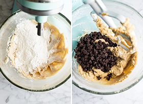

How to Create Chocolate Chip Cookies
by: Stepanos Steve Saghbazarian
Step 1: Ingredients / Shopping List
- 1 cup unsalted butter softened
- 1 cup white granulated sugar
- 1 cup light brown sugar packed
- 2 tsp pure vanilla extract
- 2 large eggs
- 3 cups all-purpose flour
- 1 tsp baking soda
- 1/2 tsp baking powder
- 1 tsp sea salt
- 2 cups of chocolate chips
(Laura, 2018)
Step 2: Combine Dry Ingredients
Combine the dry ingredients together in a medium size bowl.
(Laura, 2018)
Step 3: Combine Remaining Ingredients
- Combine butter and sugars in mixing bowl. Make sure the butter is soften (remove butter from fridge two hours prior to making cookies).
Once butter/sugar mixture is beaten well, add the eggs and vanilla and beat to combine.
- Add dry ingredients and stir until just combined. Then add the chocolate chips and beat until they are evenly distributed throughout the dough.
The chocolate chip cookie dough should be easy to roll and not sticky. It should not be dry or crumbly. See photo below for the optimal texture.
(Laura, 2018)
(Laura, 2018)

(Laura, 2018)
Step 4: Portion and Roll Dough
Once the cookie dough is finished, it's time to portion and roll the dough.
Using a ice cream scooper, scope the cookies in a uniform size.
(Laura, 2018)
Step 5: Baking the Cookies
Pre-Heat oven to 375* F.
Place parchment paper on cookie sheet.
Place the cookie dough evenly apart on the backing sheet (about 1.5 to 2" apart).
Bake for 8 - 10 minutes or until they look barely done with a golden color.
Let cookies cool on baking sheet for 5 minutes before removing and placing them on a wire rack to cool completely.
Enjoy the cookies with some milk!
(Laura, 2018)